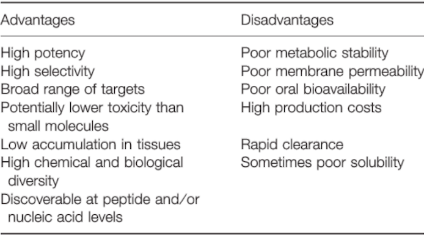
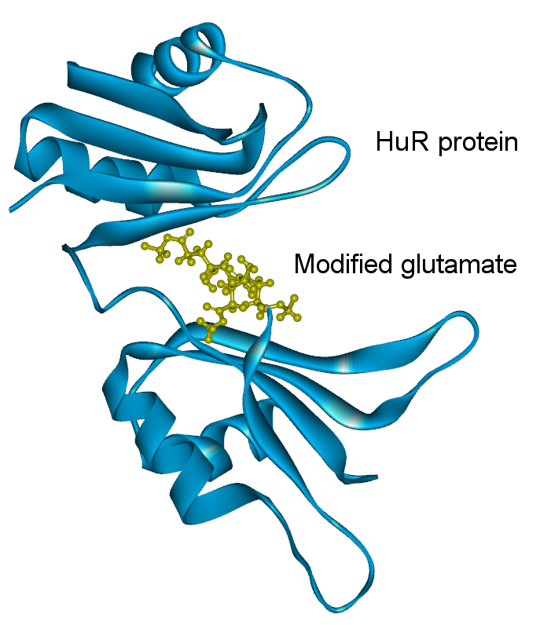

JS-1 Design
Peptides are involved in a variety of physiological and pathological processes and play very important roles in modulating various cell functions.
Previous peptide drugs can form polymers according to a specific sequence and function as drugs. Copaxone, for example, is composed of four kinds of amino acids and is used to treat multiple sclerosis. The following table shows the advantages and disadvantages of previous peptide-based drugs(See Table. C-1 below)[1].
We determined to design a peptide drug which not only possesses the advantages that come with it, but could also overcome some of the disadvantages. To put our idea into practice, we modified the structure of peptides and ultimately, our peptidic drug--"JS-1", successfully overcomes some of the disadvantages including poor metabolic stability, poor membrane permeability, and low solubility.
Table. C-1 :The advantages and disadvantages of peptide-based drugs. 
- The steps of our drug development are:
- (1)Synthesis of HuR inhibitors polyamine polymers with computer simulation.
- (2)Screening and modification of a series of polymers with similar structures, to find an active molecule that exhibits good inhibition of HuR.
- (3)Exploration of the biochemical properties of such polyamine polymers, including message transfer pathways in different cells.
- (4)Development and evaluation on the therapeutic effect on the mice model of disease in order to provide new options for clinical application.
- Chem Biol Drug Des 2013; 81: 136–147.
- Wang, S. H.; Wu, Y. T.; Kuo, S. C.; Yu, J. J Chem Inf Model 2013, 53, (8), 2181-95.
- Moustakas, D. T.; Lang, P. T.; Pegg, S.; Pettersen, E.; Kuntz, I. D.; Brooijmans, N.; Rizzo, R. C. J. Comput Aided Mol Des 2006, 20, (10-11), 601-19.
- Rachakonda TD, Schupp CW, Armstrong AW., Psoriasis prevalence among adults in the United States., J Am Acad Dermatol. 2014 Mar;70(3):512-6. doi: 10.1016/j.jaad.2013.11.013. Epub 2014 Jan 2.
- Correia, B.; Torres, T. Acta Biomed 2015, 86, (2), 121-9.
- Ueyama A, Yamamoto M, Tsujii K, Furue Y, Imura C, Shichijo M, Yasui K., Mechanism of pathogenesis of imiquimod-induced skin inflammation in the mouse: a role for interferon-alpha in dendritic cell activation by imiquimod., J Dermatol. 2014 Feb;41(2):135-43. doi: 10.1111/1346-8138.12367. Epub 2014 Jan 3.
- http://accelrys.com/products/collaborative-science/biovia-discovery-studio/
(1) Design
In molecular design, we adopted the "HotLig" for preliminary analysis and “Discovery Studio” modeling method for theoretical verification [2]. These methods was reported to have satisfactory predictive simulation for binding affinities by calculation of intermolecular forces such as H-bonds, ion-pairs, metal-coordination and hydrophobic effects. With the computer software (Dock 5.1 / Hot-Lig) [3], we can evaluate the candidate molecules, compare them with the existing HuR protein inhibitors, and isolate the selected one with predicted higher binding capacity into further development, thereby saving costs and optimizing the modification of structure.
Before using HotLig, we first modified the amino acids with functional groups to protect polymers from easy degradation. These amino acids include lysine, glutamate, aspartate, phenylalanine, tyrosine, threonine, cysteine, tryptophan, and etc.
After modeling analysis, modified glutamate* (Figure. C-1) was predicted to have the best interaction at the RNA binding site of HuR.

Figure. C-1. Modified glutamate*.
*patent confidentiality
Meanwhile, we use the software "Discovery studio" for double modeling check. The software can verify the best binding sites of the candidate molecules to HuR proteins as well as the most possible binding mode, and presents it with 3D model [4](See Simulation for details).
(2) Synthesis and Analysis
Afterwards, we adopted the common “Ring-Opening Polymerization” method [7] to synthesize this molecule, and then packaged it as a nanoparticle which can be easily absorbed by cells (See Experiment 4- In vitro for details). We first confirmed that JS-1 was delivered into cells as predicted by using bio-labeling fluorescent dyes, and then evaluated the actual therapeutic effects on mice models of diseases.
(3) Model: Psoriasis
Psoriasis is a chronic inflammatory skin disease. On the lesioned skin region, erythema and scales can be easily noticed, which severely undermine the life quality of the patients [5]. Psoriasis is common in US with the prevalence of the adults over 20y/o reaching 3.2% [4]. We attempted to apply the particle we designed to treat psoriasis.
We employed "Imiquimod(IMQ)-induced psoriasis model" in mice as an simulation of the psoriasis pathology in human. We smeared IMQ on the skin of mice , which induced psoriasis pathological pathway. After receiving messages from TLR7, dendritic cells secreted cytokines like IFN- α, IL-23, IL-6, TNF- α. These cytokines would stimulate T-cell and cause immune response [6]. When we applied the JS-1, the polypeptide nanoparticle, to lesioned region, the results showed that it could effectively treat the psoriasis symptoms (See Experiment-In vivo) considering the three severity index of psoriasis: erythema, thickness, and scaling.
The success on mice model lays the foundation for future therapeutic development. We expects that there will be better treatments for weak patients who have suffered from chronic inflammatory diseases and cancer.
Reference:
Table. C-1：Chem Biol Drug Des 2013; 81: 136–147.